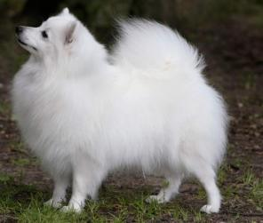

COI: 3.125 %
 Ettore Del Colle Degli Ulivi
Ettore Del Colle Degli Ulivi COI: 6.25 %
 Only
Only
Ch.ITA
 Geo
Geo Bella Del Colle Degli Ulivi Geo
Bella Del Colle Degli Ulivi GeoCh.ITA
 Desy Dell' Antica Etruria
Desy Dell' Antica Etruria
Ch.ITA
|
Дата рождения: 07.09.2010г.р Заводчик: Francini Roberto (Italia)
Владелец: Клитина Елена
Окрас: Белый
Пол: сука Рост: 27см
Титулы:
Чемпион мира (Венгрия-2013)
Юный чемпион мира (Франция - 2011)
Чемпион России Чемпион РКФ Чемпион национального клуба России Шпиц Чемпион Евразии 2012.2013 Чемпион породы "Золотой ошейник" 2011 Чемпион Люксембурга Чемпион Финляндии
Nordic Winner-2013
Чемпион Чехии
|
 |
| Galileo Del Colle Degli Ulivi COI: 3.125 % |
Ettore Del Colle Degli Ulivi COI: 6.25 % |
Only
Ch.ITA
|
| Nocciolina | ||
| Dolly | Geo |
|
| Alba | ||
| Bella Del Colle Degli Ulivi |
Geo |
Et Dell' Antica Etruria
Ch.ITA
|
| Desy Dell' Antica Etruria
Ch.ITA
|
||
| Nocciolina | Fiocco Dell' Antica Etruria | |
| Lea |